E-arvetest valmis ostuarveteni — automaatselt ja täpselt.
2026•Kestus ~1,5 h•wiki.directo.ee/et/yld_hankija
Directo · Hankija automaatika
Päevakord
Mida täna vaatame
1
E-arve on alus
Miks automaatika töötab ainult e-arvega + Directo AI nipp
2
Mis see on ja mida oskab
Lihtne mudel: filter → tulemus. Millal kasutada, millal mitte
3
Seadistamine
Hankija kaardi sakk „Automaatika" — väljad ja loogika
4
Praktilised näited
13 elulist stsenaariumi reeglitabeli ja tulemusega
5
Reeglite loogika
Täitmise järjekord ja KM koodi valik
6
Nipid ja KKK
Parimad praktikad ja levinud vead
Directo · Hankija automaatika
01
E-arve on alus
Hankija automaatika töötab ainult e-arvega. Vaatame, miks — ja kuidas ka PDF-arved e-arveteks muuta.
Osa 1 · E-arve on alus
Osa 1 · Alus
E-arve vs PDF — miks e-arve võidab
✕ PDF-arve
Andmed tuvastatakse tekstipõhiselt — madal täpsus
Ei toeta automaatkonteeringu reegleid
Vajab käsitsi kontrolli iga kord
✅ E-arve (XML)
Andmed tulevad struktuurselt — 100% täpne tuvastus
Toetab täielikku hankija automaatikat
Võimaldab automaatse ostuarve loomise + kinnituse
💡
NIPP — Directo AI. Tekstipõhised PDF-arved saab Directo AI-ga automaatselt e-arveteks muuta ja neid siis töödelda nagu tavalisi e-arveid.
Osa 1 · E-arve on alus
02
Mis see on ja mida oskab
Kõige tähtsam mõttemudel: reegel koosneb filtrist (millal rakendub) ja tulemusest (mida täidab).
Osa 2 · Mõiste ja võimekus
Osa 2 · Mõiste
Mis on Hankija Automaatika?
See on reeglite komplekt hankija kaardil, mis täidab e-arvest loodud ostuarve read automaatselt — konto, KM kood, objekt, projekt, kasutaja — kohe arve saabumisel.
1
E-arve saabub
Dokumentide Transport
→
2
Ostuarve luuakse
Automaatselt
→
3
Reeglid rakenduvad
Konto, objekt, projekt…
→
4
Arve kinnitub
Kui reeglid lubavad
📍
Kust leida: Ost → Dokumendid → Hankijad → ava hankija kaart → sakk Automaatika. Seadistatakse iga hankija jaoks eraldi.
Osa 2 · Mõiste ja võimekus
Osa 2 · Võimekus
Mida automaatika oskab?
📋
Automaatne kirjendamine
Reeglid otsivad e-arve realt teksti ja täidavad konto, objekti, projekti, kasutaja.
⊞
Ridade koondamine
Arveread koondatakse üheks — sarnase kirjelduse või summavahemiku alusel.
👤
Seotus personaliga
Read seotakse töötajatega — nt kütusekulu kütusekaardi kasutaja järgi.
📐
Finantsretsept
Kulu jagatakse objektide vahel kindlas proportsioonis.
✅
Automaatkinnitus
Kui summa klapib täpselt või jääb vahemikku, arve kinnitub ise.
📤
Import / eksport
Reeglitabeli saab Excelisse eksportida, muuta ja tagasi importida.
Paljurealised arved, mis vajavad korduvat konteerimist
✕ Ei sobi hästi
Laokaupade ostuarved, kui laoarvestus toimib Directos
Arved, kus rea sisu muutub iga kord täielikult
💡
Täielik automatiseerimine: kui e-arve saabumisel luuakse automaatselt ostuarve + automaatkinnitus, jääb ainsaks käsitsi tegevuseks arve tasumine.
Osa 2 · Mõiste ja võimekus
03
Seadistamine
Hankija kaardi sakk „Automaatika" — vasakul filtrid, paremal täidetavad väljad.
Osa 3 · Seadistamine
Osa 3 · Seadistamine
Hankija kaart → sakk „Automaatika"
Ekraan Reeglite tabel — vasakul filtrid, paremal täidetavad väljad
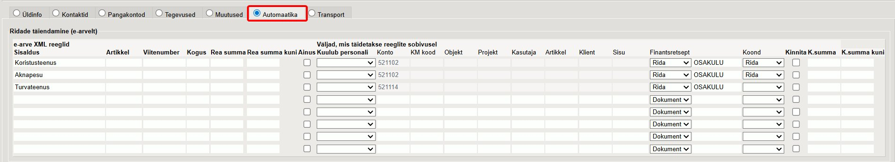
💡
Kõige täpsem kontroll on vaadata, milline tekst jõuab pärast e-arve importi ostuarve rea Sisu väljale — just selle järgi „Sisaldus" filter tegelikult töötab. Ava e-arve XML Dok. Transpordist nupuga XML.
Osa 3 · Seadistamine
Osa 3 · Väljad
Iga reegel = filter + tulemus
🔎 FILTRID — millal reegel rakendub?
Sisaldustekst, mida otsitakse rea Sisust
Artikkelartiklikood e-arve realt
Viitenumbere-arvest tuvastatud viitenumbri seast otsitav tekst
Kogustäpne kogus (toetab > ja <)
Rea summa (…kuni)summa või vahemik
Kuulub personalseos töötaja kaardiga
Ainusrakendudes ei kirjuta teised üle
✓ TULEMUSED — mis täidetakse?
Kontokulukonto arve reale
KM koodkäibemaksukood
Objekt / Projektfinantsdimensioonid
Kasutaja / Klienttöötaja- või kliendikood
Sisurea kirjelduse tekst
Finantsretseptkulu jagamise retsept
Koondread koondatakse ühele reale
Kinnita (+ K.summa)arve kinnitub, lubatud summa/vahemik
💡
„%" märk väljal Sisaldus tähendab „kõik arve read". Seda kasutatakse üldreeglites — pane need alati tabeli lõppu.
Osa 3 · Seadistamine
04
Praktilised näited
13 elulist stsenaariumi — Dok. Transport → ostuarve → automaatika rakendub. Igal näitel reeglitabel ja tulemus.
Osa 4 · Näited
Näide 1Teema · Koondamine
Kõik read ühele kontole + objekt + automaatkinnitus
Reegel: Sisaldus = %Konto 522104Objekt PARNUKoond = DokumentKinnita ✓. Kõik read koondatakse üheks ja arve kinnitub ise.
Sisaldus = % tähendab „mida iganes" — reegel rakendub kõigile ridadele. Iga rida jääb eraldi reaks ostuarvel, kõik lähevad samale kontole.
Reegel Hankija automaatika
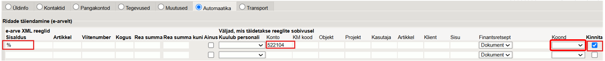
Tulemus Ostuarve — read eraldi, sama konto
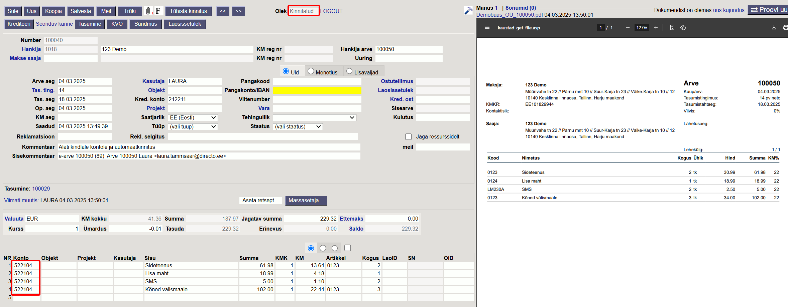
💡
„%" tabeli lõpus tagab, et kõik ülejäänud read saavad vaikimisi konto. Spetsiifilisemad reeglid pane alati ette.
Osa 4 · Näited
Näide 3Teema · KM koodid
Erinevad käibemaksumäärad ühel arvel
Kui reeglis KM kood jätta tühjaks, võtab Directo KM määra igalt e-arve realt eraldi. Reegel määrab ainult konto — sobib arvetele, kus on nii 24%, 0% kui pöördmaks segamini.
Reegel KM kood tühi → tuleb e-arvelt
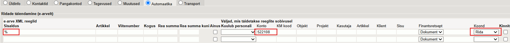
Tulemus Ostuarve — iga real oma KM määr
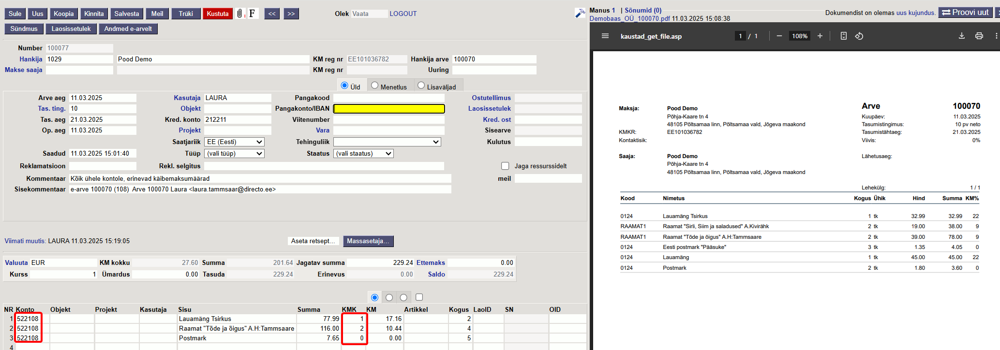
💡
Kui reeglis KM kood on täidetud, on see alati ülimuslik ja kirjutab e-arve KM üle (nt osaline sisendkm 40% või 50%). Loogika: reegel → hankija kaart → artikkel → e-arve määr.
Osa 4 · Näited
Näide 4Teema · Automaatkinnitus
Automaatkinnitus summa järgi
Reale määratakse K.summa. Kui ostuarve rea summa klapib täpselt (või jääb vahemikku K.summa – K.summa kuni), arve kinnitub. Kui mõni summa erineb, arve luuakse, aga ei kinnitu.
Reegel K.summa määratud
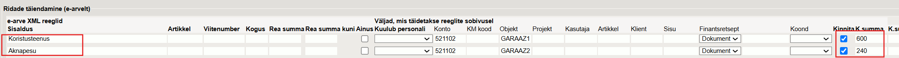
Tulemus Ostuarve — summad klapivad → kinnitatud
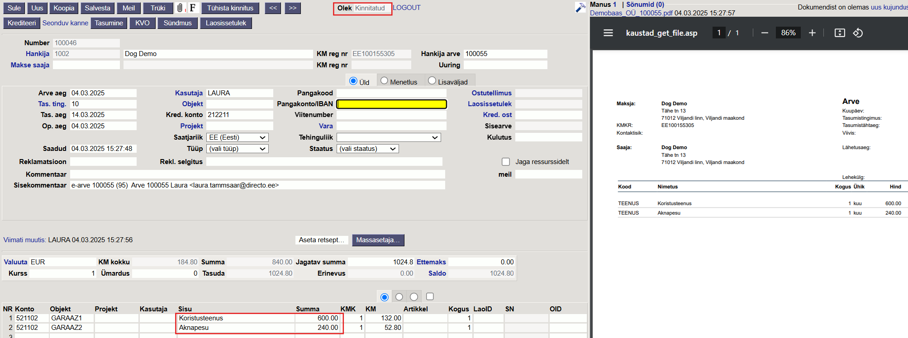
💡
Vahemik kaitseb üllatuste eest, aga lubab väikest kõikumist (nt küttearved, kommunaal). Mittekinnitumise põhjuse näed ostuarve sisekommentaari tulbast.
Osa 4 · Näited
Näide 5Teema · Automaatkinnitus
Tingimuslik kinnitus — ootamatud lisaread
Kui arvel on ridu, millele ükski kinnita-reegel ei rakendu, jääb kogu arve kinnitamata. See on kaitsemehhanism ootamatute lisaridade vastu — nt hankija lisab arvele uue teenuse.
Reegel Osa ridu vahemikuga, osa ei
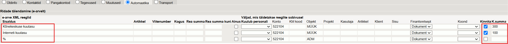
Tulemus Ostuarve — tuttavad read vahemikus → kinnitatud
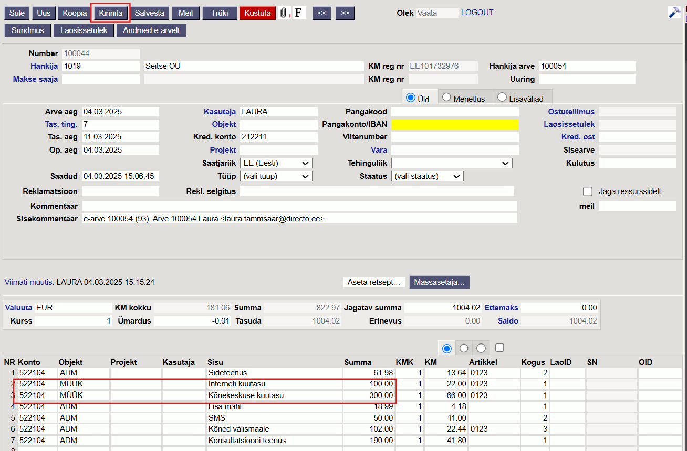
💡
Automaatkinnitus on turvaline vaikimisi: kui midagi ootamatut lisandub, jääb arve inimese üle vaadata, mitte ei kinnitu vaikselt valesti.
Osa 4 · Näited
Näide 6Teema · Finantsretsept
Finantsretsept — kulu jagamine objektide vahel
Reeglis määratud finantsretsept jagab rea kulu objektide vahel (nt ADM 20%, HOOLDUS 50%, MÜÜK 30%). Retsept = Rida → jagamine igal real eraldi; = Dokument → kogu arvele.
Reegel Finantsretsept määratud real
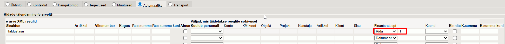
Tulemus Ostuarve — rida jagatud objektidele
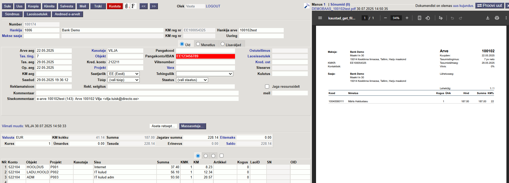
💡
Üks retsept, mitu kontot: kui retseptis on konto {10}, tuleb konto automaatika reeglist. Nii jagab sama retsept eri kulukontode kulusid — eraldi retsepti pole vaja.
Osa 4 · Näited
Näide 7Teema · Finantsretsept · {10}
Sama finantsretsept, erinev konto reeglist
Retsept määrab jagamise proportsioonid ja objektid, konto aga võetakse automaatika reeglist. Nii jagab üks retsept eri kulukontode kulusid — eraldi retsepti pole vaja koostada.
Reegel + tulemus + retsept Konto tuleb reeglist (521102), retsept jagab objektidele ADM / HOOLDUS / MÜÜK
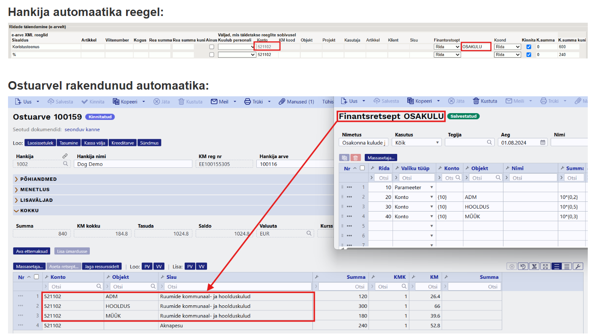
💡
Finantsretseptis konto {10} tähendab „konto tuleb reeglist (parameetrina)". Üks retsept töötab paljude kontodega — muuda vaid reegli Konto välja, jagamisloogika jääb samaks.
Osa 4 · Näited
Näide 8Teema · Finantsretsept · kütusekaart
Kütusekaardi arve — üks retsept iga kaardi kohta
Kütusearvel (nt Neste) on ostud grupeeritud kaardi kaupa — iga kaart kuulub ühele autole/juhile. Filtriks on kaardi number Sisalduses, mis suunab rea õigesse finantsretsepti. Iga kaardi objekt (auto/juht) on kirjutatud finantsretsepti sisse.
1 · Automaatika reeglid — filter kaardi numbri järgi
Sisaldus
Finantsretsept
Koond
Futura 95%…0001
KÜTUS-01
Rida
Autopuhastus%…0001
PESU-01
Rida
Futura 95%…0002
KÜTUS-02
Rida
Autopuhastus%…0002
PESU-02
Rida
…0001 / …0002 = kütusekaardi number. Iga kaart + toode → oma reegel ja oma retsept.
2 · Finantsretsept „KÜTUS-01" (üks auto)
Rida
Valiku tüüp
Konto
Objekt
KM kood
100
Parameeter
–
–
–
200
Konto
5130
AUTO-01
sõiduauto 50%
Objekt AUTO-01 = selle kaardi auto/juht, kirjutatud retsepti sisse. KM kood = sõiduauto sisendkm 50%.
💡
Kütusekaardi number on Sisalduses filtrina → suunab õigesse retsepti. Iga kaardi jaoks tee oma finantsretsept, kuhu on kirjutatud selle auto/juhi objekt. Sõiduauto puhul rakendub sisendkm 50% KM kood.
Osa 4 · Näited
Näide 9Teema · Personal
Personaliga sidumine — kõik samale kontole
Telia arve: iga töötaja mobiilinumbriga seotud kuluplokk. Kõigi kulud → ühele kontole, iga rida seotakse õige töötajaga läbi personali kaardi.
1 · Töötaja kaardil (Personal → Dokumendid)
Tüüp
Dok.nr = mobiilinumber
Telefon
Mati → 55001234
Telefon
Kati → 55005678
Telefon
Juta → 55009999
2 · Automaatika reegel
Kuulub personal
Konto
Objekt
Kasutaja
Telefon
5700
tühi → töötajalt
täitub ise
3 · Tulemus ostuarvel
Rida
Konto
Kasutaja
Mati kõned
5700
MATI
Kati kõned
5700
KATI
Juta kõned
5700
JUTA
💡
Objekt täidetakse töötajalt automaatselt ainult siis, kui reeglil Objekt on TÜHI. Reeglil olev objekt on alati prioriteet.
Osa 4 · Näited
Näide 10Teema · Personal · „Ainus"
Erand ühele töötajale — „Ainus" linnuke
Enamiku parkimistasud → konto 5700. Erand: Juta parkimistasud → konto 5720, eri objekt. Erandreegel tuleb tabelis ESIMESENA + Ainus linnuke.
#
Sisaldus
Konto
Objekt
Kuulub personal
Ainus
1
Parkimistasu%55009999
5720
JUTA-PARK
Telefon
✓
2
%
5700
tühi
Telefon
–
Tulemus
Juta parkimine → 5720, obj JUTA-PARK (Ainus hoiab üldreegli eemal)
Kõik teised → 5700, objekt + kasutaja töötaja kaardilt
Juta muud kõned → 5700, kasutaja JUTA
💡
Reegel: erand alati ETTE + „Ainus" linnuke, üldreegel lõppu. Nii ei kirjuta üldreegel erandi tulemust üle.
Osa 4 · Näited
Näide 11Teema · Personal · eri kontod
Personaliga sidumine — kõik kulud ERI kontodele
„Kuulub personal" ei sobi, kui igal töötajal peab olema erinev konto — see meetod annab kõigile ainult ühe konto. Selle asemel kirjuta Sisaldus väljale: teenuse nimi + % + töötaja number.
Sisaldus
Konto
Objekt
Parkimise teenustasu%5123456 (Mari number)
5600
MARI-P
Parkimise teenustasu%5654321 (Jüri number)
5610
JÜRI-P
„Kuulub personal"
Kõigile sama konto
Objekt + kasutaja täituvad töötaja kaardilt
„Sisaldus%number"
Igal töötajal erinev konto
Kasutaja EI täitu automaatselt
💡
Selle meetodiga Kasutaja väli ei täitu automaatselt — vajadusel lisa kasutajate jaoks eraldi reegel.
Osa 4 · Näited
Näide 12Teema · Lepingupõhine
Lepingu number — Viitenumber vs Sisaldus
Lepingu number võib e-arve XML-is olla eri kohtades. Enefit saadab selle väljal <CustomerRef> → kasuta filtrit Viitenumber. Elektrum paneb selle „Group-id" välja → number tuleb kirjutada filtrisse Sisaldus.
E-arve XML Enefit — lepingu nr CustomerRef väljal
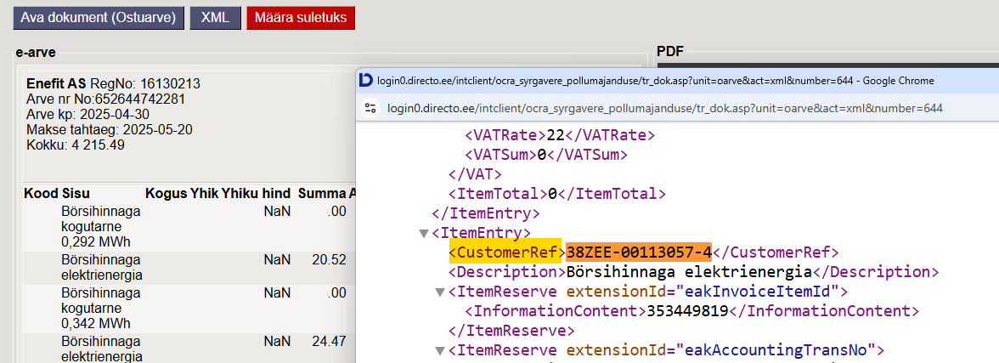
💡
Viitenumber otsib e-arves tuvastatud viitenumbri seast, Sisaldus aga rea Sisu tekstist. Mõlemad otsivad sisaldust (Viitenumber täpset vastet vaid finantsretseptiga). Iga lepingu reegel võib määrata eri objekti (konto sama) → üks arve jaguneb objektidele. Vaata alati XML-i, et teada, kus number asub.
Osa 4 · Näited
Näide 13Teema · Koondamine kandel
Kui ostuarvel ei saa koondada — koonda kandel
Andmesideteenuste arvel on erineva sisuga read (Kõned, SMS, Internet…), ühist teksti pole. Ostuarvel eri reeglitega ridu ühele reale ei saa — kuid kandel koonduvad identsed read automaatselt.
✕ Ostuarvel ei saa koondada
Sisalduses pole ühist teksti kõigile
Erinevate reeglitega ridu ei saa ühele reale panna
✅ Kandel saab koondada
Konto + KM kood + objekt (+ projekt) identsed
Mõlema reegli Sisu väli täidetud SAMA tekstiga
Sisaldus
Konto
KM kood
Objekt
Sisu (identne!)
Koond
Kõned
5700
1
ADMIN
Kõned ja internet
Rida
SMS
5700
1
ADMIN
Kõned ja internet
Rida
⚠️
Eeldus kandel koondumiseks: konto, KM kood, objekt ja projekt identsed + Sisu täpselt sama tekstiga. Kui Sisu on tühi, koonduvad vaid täiesti identsed read.
Osa 4 · Näited
05
Reeglite loogika
Kuidas Directo reeglid läbi käib ja mis järjekorras väljad täidetakse — see selgitab „miks tuli selline tulemus".
Osa 5 · Loogika
Osa 5 · Loogika
Reeglid käivad iga rea peal järjest läbi
Directo proovib kõiki reegleid järjest iga arve rea peal. Esimene sobiv täidab väljad. Iga järgmine reegel rakendub samuti — kuid täidab ainult veel tühjaks jäänud välju. Juba täidetut üle ei kirjutata.
#
Sisaldus
Konto
Objekt
Kuulub personal
1
Parkimistasu%55009999
5720
PARK
tühi
2
%
5700
tühi
Telefon
Rida „Parkimistasu 55009999" (Juta) R1 ✓ sisaldab „Parkimistasu" → Konto 5720, Objekt PARK. Reeglil 1 pole „Kuulub personal" → Kasutaja jääb tühjaks. R2 ✓ (%) → Konto/Objekt juba täidetud, EI kirjuta üle. „Kuulub personal=Telefon" leiab numbri 55009999 järgi töötaja → täidab tühja Kasutaja. = 5720 · PARK · Kasutaja JUTA
Rida „Kõneminutid 55001234" (Mati) R1 ✕ ei sisalda „Parkimistasu". R2 ✓ (%) → Konto 5700. „Kuulub personal=Telefon" leiab numbri 55001234 järgi → Kasutaja + Objekt Mati kaardilt. = 5700 · Objekt Mati kaardilt · Kasutaja MATI
💡
Kõik reeglid käivad iga rea peal · täidetud välja ei kirjutata üle · tühi väli täidetakse järgmise reegliga.
Osa 5 · Loogika
Osa 5 · Loogika
Kust väli oma väärtuse saab — prioriteet
1
Hankija automaatika reegel
Kui reeglis on väli täidetud, kasutatakse seda väärtust.
Kõrgeim
2
Hankija kaart (LS konto, KM kood)
Kui reeglis väli tühi, võetakse väärtus hankija kaardilt.
↓
3
E-arve andmed
Kui hankija kaardil tühi, kasutatakse e-arve KM määra ja „Dok. transport eelistab" valikut.
Madalaim
💡
Iga järgmine tase rakendub ainult siis, kui eelmine on tühi. Reegel on alati ülimuslik.
Osa 5 · Loogika
Osa 5 · Loogika
KM koodi valik & e-arve XML elemendid
KM koodi määramise loogika
1
Automaatika reegel
2
Hankija kaart
3
Artikkel / artikliklass
4
KM määra järgi (Dok.transport eelistab = Jah)
E-arve XML elemendid
Sisaldus<Description><ItemDescription>
Artikkel<ProductCode><ItemID>
Viitenumber<CustomerRef><InvoiceReference>
Kogus<Quantity><LineQuantity>
Rea summa<LineTotal><ItemAmount>
⚠️
0% KM-koode on mitu (maksuvaba, pöördmaks jne) — need tuleb ette määrata hankijale, artiklile või automaatika reeglis!
Osa 5 · Loogika
06
Nipid ja KKK
Levinud küsimused, tüüpvead ja parimad praktikad seadistamisel.
Osa 6 · Nipid ja KKK
Osa 6 · KKK
Sagedased küsimused
? Mitu reeglit rakendub ühele reale?
KÕIK sobivad reeglid käivad iga rea peal läbi. Esimene täidab väljad, järgmised saavad täita ainult tühjaks jäänud välju.
? Miks reegel ei rakendu?
Kontrolli, et rea Sisu sisaldab otsitavat teksti. Ava e-arve XML Dok. Transpordist → nupp „XML" ja vaata täpset teksti.
? Miks täidetakse vale sisu / objekt?
Kasuta „Ainus" linnukest — kui see reegel rakendub, ei kirjuta teised reeglid seda rida enam üle.
? Töötaja objekti ei asetata?
Objekt täidetakse töötajalt ainult siis, kui reeglil Objekt on TÜHI. Reeglil olev objekt on alati prioriteet.
Osa 6 · Nipid ja KKK
Kokkuvõte
Peamised mõtted kaasa
✓
Töötab e-arvetega — seadista iga hankija kaardil eraldi (PDF → Directo AI-ga e-arveks).
✓
Iga reegel = filter (millal) + tulemus (mis täidetakse). „%" = kõik read; spetsiifilised ette, üldised lõppu.
✓
Kõik reeglid käivad iga rea peal läbi — täidetut üle ei kirjutata. „Ainus" lukustab erandi.
✓
Automaatkinnitus säästab aega; summa vahemik annab lubatud hälbe ja kaitseb üllatuste eest.
✓
Koond muudab paljurealise arve üherealiseks; finantsretsept jagab kulu objektide vahel.
Kokkuvõte
⚙️ Aitäh!
Küsimused?
Loe lähemalt: wiki.directo.ee/et/yld_hankija#automaatika ja raamatupidaja nipinurk — „Kuidas e-arvetest automaatselt ostuarveid luua".